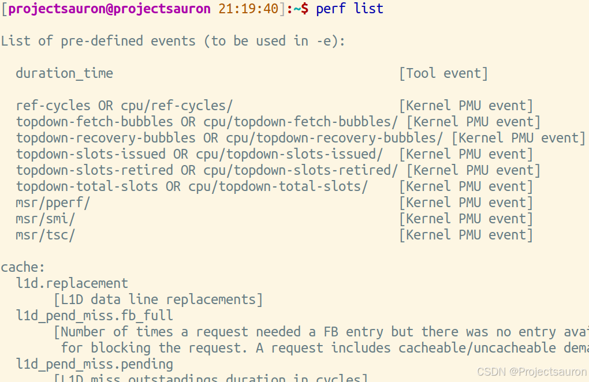
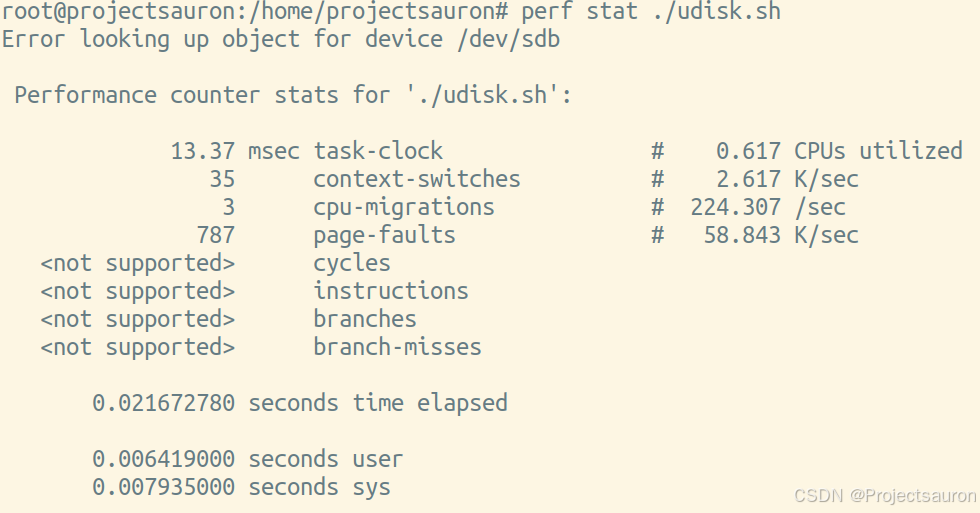
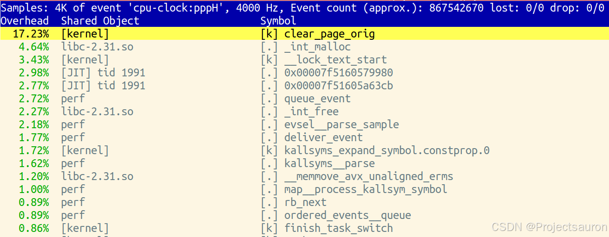
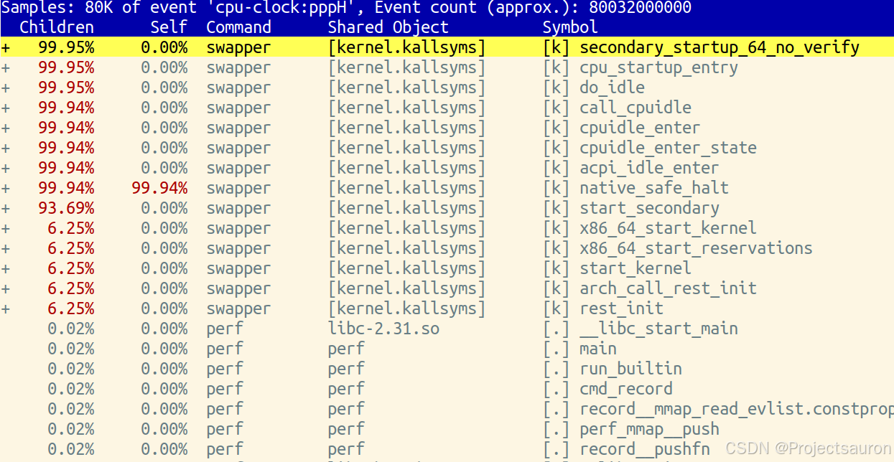
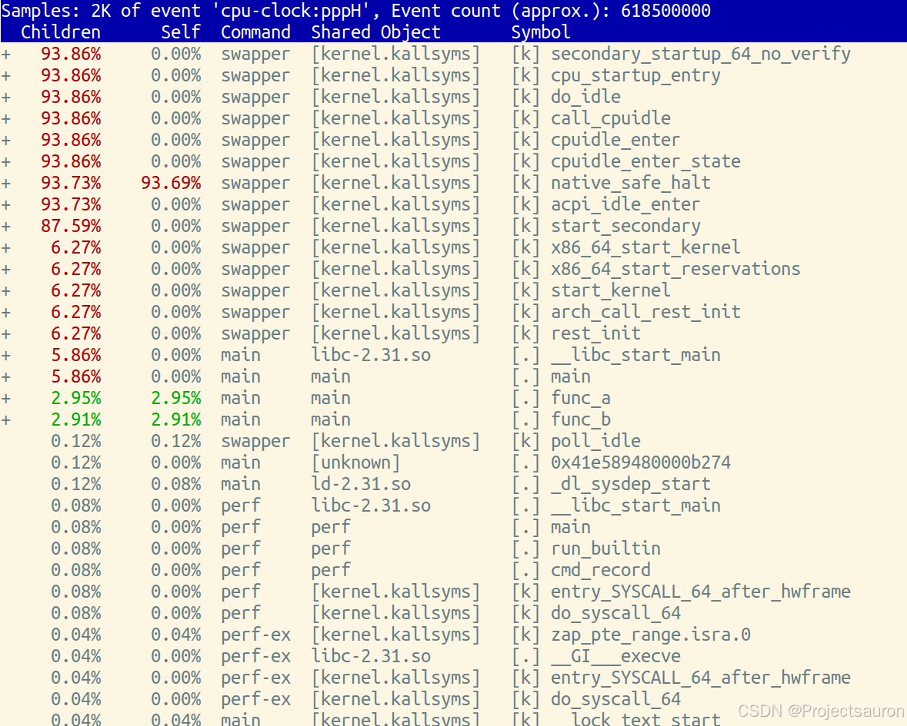

Linux 下 perf 的使用
[TOC]
一、概述
1、perf 作用
perf 是一个性能分析工具（基于 Linux 内核提供的性能事件 perf_event 口），用于对 Linux 系统进行性能调优和性能分析。它可以通过收集硬件性能计数器、跟踪系统事件和采样程序调用栈等方式来提供详细的性能统计信息。
perf 依赖事件进行统计，这里的事件是通过采样机制，并不是 clock 级别的统计；根据使用 perf 工具的不同按测量事件的类型进行统计。
2、常用的工具集
除了 perf 命令本身，还有一些常用的工具集可以与 perf 搭配使用来进行更深入的性能分析和调优。以下是一些常用的 perf 工具集：
perf stat：用于收集和显示性能计数器统计信息，可以通过perf stat命令来监测进程或命令的整体性能指标，如指令数、缓存命中率、分支预测错误等。perf record：用于采集程序执行期间的硬件性能计数器数据、事件和调用栈信息，并将其保存到数据文件中。可以使用perf record命令来启动采样，并通过perf report命令来分析采样数据。perf report：用于分析通过perf record收集的性能采样数据，并生成性能分析报告。可以使用perf report命令来查看调用栈信息、函数耗时和性能热点等。perf top：用于实时监测进程的性能指标，并显示当前的性能热点。可以使用perf top命令来查看 CPU 使用情况、函数执行次数和事件计数等。perf annotate：用于以源代码的方式显示采样数据和调用栈信息，并标注每个源代码行的性能指标。可以使用perf annotate命令来查看性能热点和优化建议。perf diff：用于比较和分析两个不同版本的程序的性能差异。可以使用perf diff命令来对比两个 perf 数据文件，并生成性能差异报告。perf probe：用于动态添加和移除性能探针，以收集特定代码路径的性能数据。可以使用perf probe命令来添加探针，并通过perf record和perf report命令来收集和分析探针数据。
还有一些针对性性能检查工具：如针对锁的 lock；针对调度的 sched；针对 slab 分配器性能 kmem；自定义检查点 probe 等。可以通过命令：perf 或 perf -h 来查看：
1 | [projectsauron]:~/$ perf -h ## 或 perf |
二、perf 工具的使用
1、perf list
perf 自身是基于内核提供的事件统计机制的，用 perf list 命令查看，这些事件主要有由以下三种构成：

Hardware event：由 PMU（Performance Monitoring Unit，性能检测单元）产生的事件，如 L1 缓存等。Software event：由内核产生的事件，如进程切换等。Tracepoints event：由内核静态跟踪点所触发的事件。
2、perf stat
perf stat 主要在程序执行的过程中统计支持的事件计数，简单的在屏幕输出。可以使用 perf stat [options] cmd 方式执行 cmd`命令，在执行结束后会输出各类事件的统计。
perf stat 命令的选项如下所示（通过命令 perf stat -h 查看）：
- -a：显示所有 CPU 上的统计信息。
- -c：显示指定 CPU 上的统计信息。
- -e：指定要显示的事件。
- -i：禁止子任务继承父任务的性能计数器。
- -r：重复执行 n 次目标程序，并给出性能指标在 n 次执行中的变化范围。
- -p：指定要显示的进程的 ID。
- -t：指定要显示的线程的 ID。
例如，测试执行脚本文件 udisk.sh：

上面显示参数的描述如下：
task-clock：任务真正占用的处理器时间，单位为 ms。(CPU占用率 = task-clock / time elapsed)context-switches：上下文的切换次数。CPU-migrations：处理器迁移次数，为了维持多处理器负载均衡，特定条件下会将某个任务迁移到另一个 CPU。page-faults：缺页异常的次数。当应用程序请求的页面尚未建立、请求的页面不在内存中，或者请求的页面虽然在内存中，但物理地址和虚拟地址的映射关系尚未建立时，都会触发一次缺页异常。另外 TLB 不命中，页面访问权限不匹配等情况也会触发缺页异常。cycles：消耗的处理器周期数。instructions：执行了多少条指令。IPC 为平均每个 cpu cycle 执行了多少条指令。branches：遇到的分支指令数。branches-misses：是预测错误的分支指令数。
3、perf top
perf top 工具的使用类似 Linux 的 top 命令，实时的输出函数采样按某一统计事件的排序结果，默认事件为是 cycles（消耗的处理器周期数），默认按降序排序；perf top 会统计全部用户态和内核态的函数，默认是全部 CPU，也可以指定某个 CPU 监控器。
perf top 可以提供一个实时的性能统计报告，显示当前系统上正在发生的性能瓶颈。通过分析这些统计数据，我们可以快速定位和解决问题。

常用参数（通过命令 perf top -h 查看）：
- -a：显示在所有 CPU 上的性能统计信息
- **-c<n>**：指定采样周期
- **-C<cpu>**：显示在指定 CPU 上的性能统计信息
- -e：指定性能事件
- -g：展示调用关系（通过光标上下移动，enter 展开）
- -K：隐藏内核统计信息
- -p：指定进程 PID
- -s：指定待解析的符号信息
- -t：指定线程 TID
- -U：隐藏用户空间的统计信息
4、perf record/report
可以通过 perf record cmd 来针对 cmd 命令进行统计。收集一段时间内的性能事件到文件 perf.data(默认)，随后需要用 perf report 命令分析。可以统计单个线程、进程、或者 CPU 事件。默认统计事件也是按照 cycles（消耗的处理器周期数），默认的平均统计频率为 1 秒 1000 次，也就是 1000Hz。
4.1 perf record
perf record命令用来采集数据，并且把数据写入数据文件中。
perf record 常用的选项有（通过命令 perf record -h 查看）：
- -a：分析整个系统的性能
- -A：以 append 的方式写输出文件
- -c：事件的采样周期
- -C：只采集指定 CPU 数据
- -e：选择性能事件，可以是硬件事件也可以是软件事件
- -f：以 OverWrite 的方式写输出文件
- -g：记录函数间的调用关系
- -o：指定输出文件，默认为 perf.data
- -p：指定一个进程的 ID 来采集特定进程的数据
- -t：指定一个线程的 ID 来采集特定线程的数据
例如，用 1000 统计频率，统计一个 sleep 5 秒过程中，全部 CPU 上的事件：
1 | root@projectsauron:~/# perf record -a -F 1000 sleep 5 |
4.2 perf report
perf report 对 perf record 生成的数据文件进行分析。
perf report 常用的选项有（通过命令 perf report-h 查看）：
- **-c<n>**：指定采样周期
- **-C<cpu>**：只显示指定 CPU 的信息
- **-d<dos>**：只显示指定 dos 的符号
- -g：生成函数调用关系图，具体等同于
perf top命令中的 -g - -i：导入的数据文件的名称，默认为 perf.data
- -M：以指定汇编指令风格显示
- –sort：分类统计信息，如 PID、COMM、CPU 等
- -S：只考虑指定符号
- -U：只显示已解析的符号
- -v：显示每个符号的地址
下面对上面perf record 生成的数据文件进行分析：
1 | root@projectsauron:~/# perf report-i perf.data |

5、perf annotate
perf annotate 用于分析和显示指定函数或指令的性能特征。它提供指令级别的 record 文件定位。使用调试信息 -g 编译的文件能够显示汇编和本身源码信息。
但要注意， annotate 命令并不能够解析内核 image 中的符号，必须要传递未压缩的内核 image 给 annotate 才能正常的解析内核符号，比如：perf annotate -k /tmp/vmlinux -d symbol。
perf annotate 可以帮助我们深入了解程序中的热点代码，包括函数调用、循环等，以及这些代码的性能特征，如执行时间、缓存命中率等。通过分析这些性能特征，我们可以了解到程序的瓶颈所在，并进行优化。
perf annotate 常用的选项有（通过命令 perf annotate-h 查看）：
- **-C<cpu>**：指定某个 CPU 事件
- -d：只解析指定文件中符号
- -i：指定输入文件
- -k：指定内核文件
- -s：指定符号定位
例：
- 先写一个 main.c，内容如下：
1 |
|
再使用 gcc 命令编译：
gcc -g -O0 main.c -o main。（-g 是 debug 信息，保留符号表等；-O0 表示不进行优化处理）执行统计命令：
perf record -a -g ./main
1 | root@projectsauron:~# perf record -a -g ./main |
- 查看结果
执行 perf report -i perf.data：

执行 perf annotate -i perf.data：
1 | func_a /home/projectsauron/test/main |